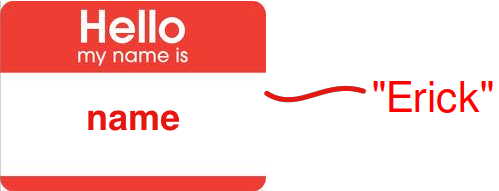
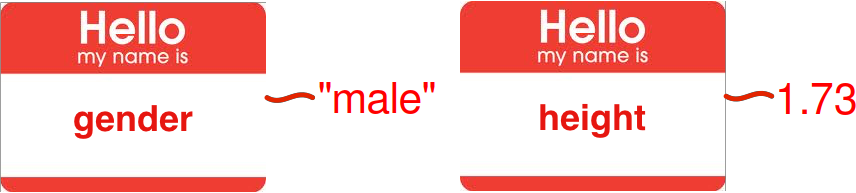

Introduction to Programming in Fiji
Erick Martins Ratamero (he/him)
Systems Analyst, RIT
Use to advance the slide
Acknowledgements
- Philo van Kemenade (@phivk) from whom I "stole" the general structure of the presentation and some of the images
- (original at https://slides.com/phivk/intro2python)
This Workshop
- Building blocks
- Putting the pieces together
- Writing complete structures
These Slides
https://erickmartins.github.io/training/IntroProgrammingIJ.html
Getting help
Documentation at https://imagej.nih.gov/ij/developer/macro/functions.html
Plugins -> Macro -> Record is your best friend
Building Blocks
VARIABLES
Variables store values under a specified name
VARIABLES
Assigning variables in Fiji
name = "Erick";
gender = "male";
height = 1.73; Types of variables
Variables can store values of different types:
string - a sequence of characters, comprising text
"a", "London", 'X', 'General Assembly'int - an integer, or whole number
1, 5, 9999, -7float - a floating point number (using a decimal point)
3.14, 1.68, 1.0bool - boolean; binary true or false values
true, falseChanging types
'Casting' a variable to another type requires some of the built-in functions we have mentioned.
a = parseInt("42");
b = parseFloat("1.69");
c = d2s(1.5333, 2);
print(c); //"1.53"
Exercise
Choose 4 things around you and create variables of 4 different types based on them
Operators
You can process the values in your variables by operators :
| = | Assignment: assign a value to a variable |
| == | Comparison: are two variables equal? |
| != | Comparison: are two variables not equal? |
|
<, >, <=, >= |
Less-than, greater-than, less or equal, greater or equal |
| +, -, *, / | Mathematical operators |
| && (and), || (or) | Logical operators |
Questions?
Exercise
Create two string variables :
first for your first name and last for your last name.
Can you make your full name by combining first and last?
(Cheating encouraged)
Collections
Collections of Values
Values can also be stored in a collection :we'll only talk about the Array
Arrays
We can store multiple values in an array:
>>> l = newArray(1,3,9,4,884328881);
>>> n = newArray('first', 'second', 'third', 'fourth');
>>> m = Array.concat(l,n);
>>> print(m[6]);
'second'An array is a ordered sequence of items (between [...]) each with their own index.
Some array examples
// This macro demonstrates how to use the Array.* functions.
a1 = newArray(10, 5, 15, 2, 1.23456);
a2 = Array.copy(a1);
list("copy", a2);
a2 = Array.trim(a1, 2);
list("trim", a2);
Array.sort(a1);
list("sort", a1);
Array.getStatistics(a1, min, max, mean, std);
print("stats");
print(" min: "+min);
print(" max: "+max);
print(" mean: "+mean);
print(" std dev: "+std);
Array.fill(a1, -1);
list("fill", a1);
a1 = newArray("one", "two", "three", "four");
print("");
a2 = Array.copy(a1);
list("copy", a2);
a2 = Array.trim(a1, 2);
list("trim", a2);
Array.sort(a1);
list("sort", a1);
function list(name, a) {
print(name);
for (i=0; i< a.length; i++)
print(" "+a[i]);
}
Questions?
Putting the pieces together
Loops
For Loops
You use loops to repeat a statement.
A for-loop is useful when you know how many times you want to repeat an action (e.g. for every item in an array)
for (start; condition; increment){
do something
}For Loops
for example:
ages = newArray(18, 21, 16, 12);
for(i=0; i< lengthOf(ages); i++){
print(ages[i]);
}
....
18
21
16
12 While Loops
A while-loop is useful when you don’t know how many times you want to run, but you know when you need to stop.
A while-loop statement checks a condition and loops until the condition is no longer satisfied.
while (condition){
do something;
}
While Loops
for example:
x = 2;
while(x > 0){
print("hooray!");
x = x - random;
}
...
hooray!
hooray!
hooray!
hooray!
hooray!
Conditional Statements
Conditional statements
Conditional statements enable you to deal with multiple options.
A part of your code is executed based on the truth value of a condition. You perform conditional checks with: if, else
if(condition){
action
}
else{
final action
}age = 17;
if(age < 18){
print("no drinks for you");
}
...
no drinks for youFunctions
Functions
Functions perform a collections of tasks, bundled under a specific name
Take input argument(s), execute statement(s), return output
Input and output can be of all different types
name = "Erick Ratamero";
length = lengthOf(name);
print(length);Built in functions
Functions
You can also define your own functions like this:
function function_name(argument(s)){
actions with argument(s)
return statement
}
function calculate(x, y, sigma){
factor = exp(-1.0*(pow(x,2)+pow(y,2))/(2*pow(sigma,2)));
return factor;
}
result = calculate(1,2,5)
print(result)
...
0.9048
Questions?